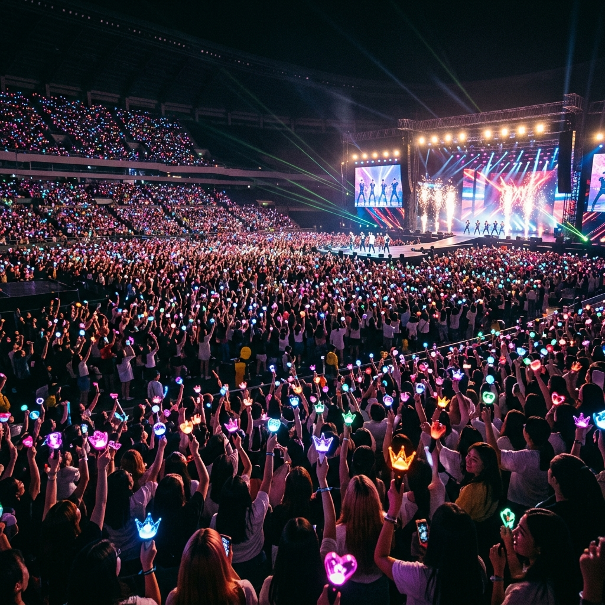
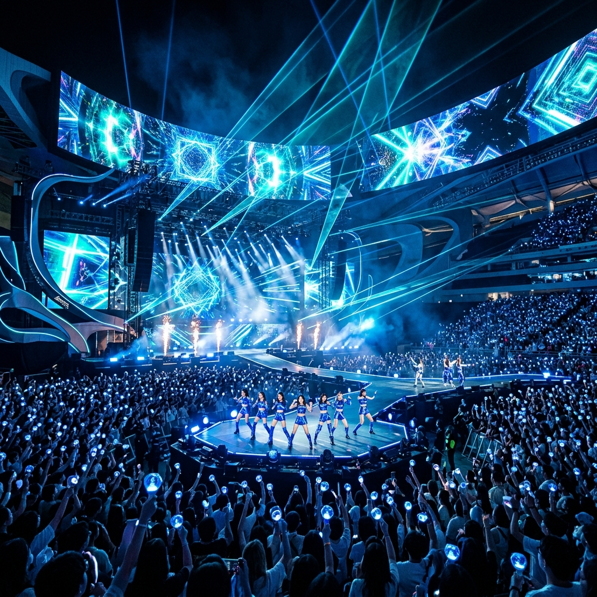

The Heart of
Seoul
K-POP은 대한민국의 역동적인 에너지와 예술적 혼이 담긴 결정체입니다. 서울의 거리에서 시작된 이 열정은 이제 전 세계 모든 도시의 광장에서 울려 퍼지고 있습니다.
#1
Cultural Export
Global
Phenomenon

"The Beginning"
K-pop이라는 용어는 1999년 빌보드 한국 특파원의 기사에서 처음 사용되었습니다. 1990년대 초 서태지와 아이들의 등장을 기점으로, 대한민국 대중음악은 단순한 청각적 경험을 넘어 시각적 퍼포먼스가 결합된 새로운 장르로 진화했습니다.
Evolution Timeline
- 1990s: 탄생과 태동
- 2000s: 아시아 시장 석권
- 2010s+: 글로벌 브랜드 도약
History of
Evolution
단순히 한국의 대중음악을 넘어 하나의 거대한 산업 시스템으로 자리 잡은 K-pop은, 각 시대를 대표하는 아티스트들과 함께 기술적, 문화적 변화를 거치며 끊임없이 발전해왔습니다.
The Three Pillars
K-pop을 완성하는 세 가지 핵심 요소입니다.
Music Diversity
팝, 댄스, 힙합, R&B, EDM 등 다양한 서구적 장르를 한국적 감성과 결합하여 독창적인 사운드를 창조합니다.
Visual Concept
강렬한 칼군무, 실험적인 패션, 그리고 예술적인 뮤직비디오는 K-pop의 강력한 아이덴티티입니다.
Systematic Training
체계적인 연습생 제도와 기획력을 통해 완성도 높은 아티스트를 배출하는 독자적인 산업 구조를 갖추고 있습니다.
The Icons
South Korea's pride, the global superstars.
BTS
세계를 하나로 묶은 7명의 소년들. 빌보드 메인 차트 석권 등 K-pop의 글로벌 인지도를 최정상으로 끌어올렸습니다.
Global PrideBLACKPINK
독보적인 걸크러쉬 매력과 스타일. 전 세계 유튜브 조회수 기록을 갈아치우며 문화적 아이콘이 되었습니다.
Style IconsNewJeans
4세대 K-pop의 선두주자. 트렌디한 이지리스닝 음악과 내추럴한 감각으로 새로운 팬덤 문화를 선도하고 있습니다.
Next WaveThe Power of
Fandom
K-pop의 가장 큰 원동력은 전 세계 팬들입니다. 아티스트와 팬 사이의 강력한 유대감은 온·오프라인을 넘나들며 하나의 거대한 사회적·문화적 커뮤니티를 형성하고 있습니다.

Pure
Visual Art
가장 한국적인 것이 가장 세계적인 것입니다. K-POP의 비주얼은 대한민국 예술의 정수를 보여줍니다.